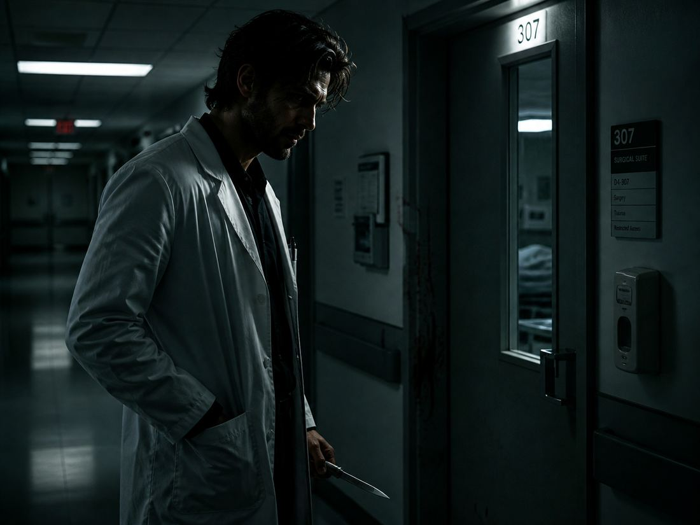
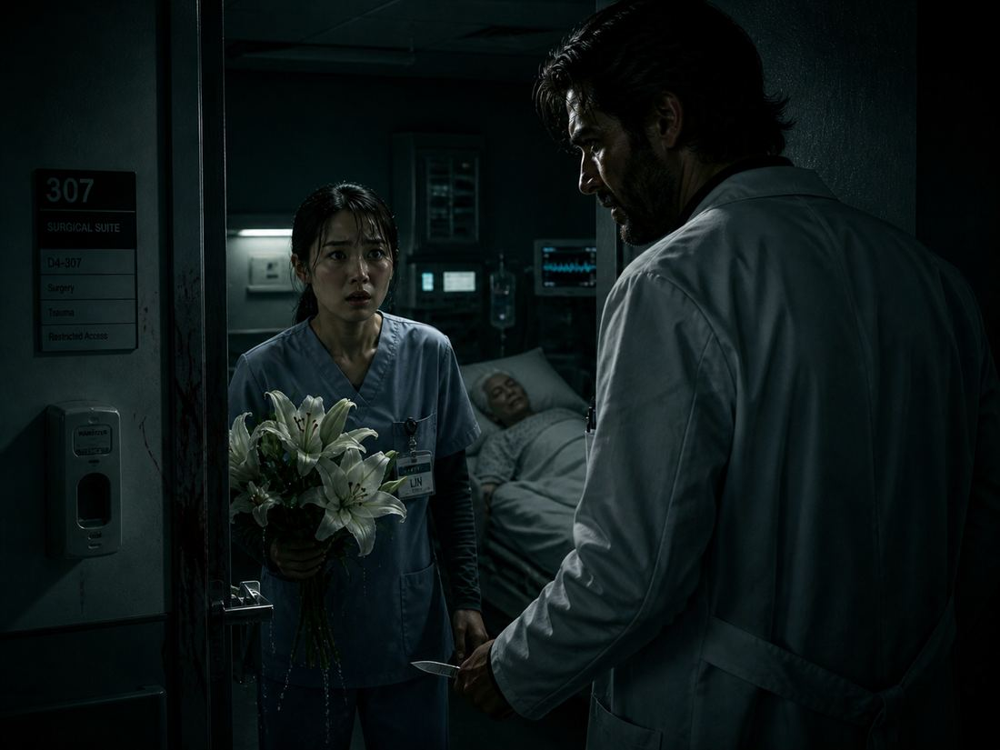
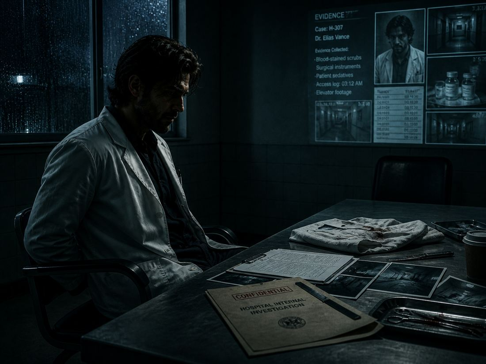

The White-Coated Shadow
He was the best surgeon at the city hospital, saving countless patients’ life by scalpels. People called him a "savior". But no one knew his other identity: a professional killer named "Shadow", the mastermind behind the black market trade in human organs.
He worked in darkness. His targets were terminal patients—those doomed to die became his commodities. He slipped into rooms, injected poison, harvested organs, and forged death records. The police never suspected because hospital monitors always "mysteriously" failed before his assassination.

Until spring, when a nurse Lin arrived, a young graduated student, with innocent eyes, whose main duty is passing him instruments during surgeries. She was passionately adoring this surgeon, whose scalpels was as precise as lasers and his calmness like ice always gave a sense of security to her.
He refused all closeness, but she persisted. The worked together and completed numerous surgeries. She always left mint candies in his break room—he knew they remitted his post-operative headaches. Unconsciously, the feelings between them had taken root.
That stormy night, he entered Room 307. An elderly man with lung cancer moaned under monitors. He gloved his hands, ready to inject poison—the door burst open. Lin stood there, clutching wet lilies: "You said you were on duty and I almost found everywhere... I just wanted to keep you company..."

His heart froze. Seeing the scalpel hovered over the man's neck, Lin's scream stuck in her throat. She saw bloodied gloves under his coat, organs in an ice bucket, and his eyes turn to killing knives as he turned around. This is not the person she was familiar with. That was the surgical expert who was called “savior” by the patients. But now, there was a deep, black, shadow. Her heart was totally broken.
"Sorry," he whispered, blade stabbing toward her. She collapsed, tears mixing with rain, staring in horror. At that moment she closed her eyes in fear and almost fainted. The death god had arrived, but she was powerless.
However, the blade stopped above her brow. He thought of her candies, her trusting gaze during surgeries and the beautiful lilies. He sheathed the knife and left.
Police whistle resounded throughout the hospital as he burned evidence. Lin told everything with tremble. Detectives found poison traces in Room 307 and recover the disabled monitors' records. His face appeared, closed security systems that night.
At interrogation, Lin sobbed through glasses: "He saved so many... Why?" The trail led to his offshore accounts, bloated with transfers. Finally, police seized organs in a freezer—cold, irrefutable proof.
Arrested, he surrendered his scalpel calmly. The captain asked why he spared Lin. He gazed at the rainy window, recalling that heartbroken girl and the lilies that night. "Even demons hesitate... sometimes." he sighed.

His white coat hanging on the wall, turned into a dark shadow, disappeared.